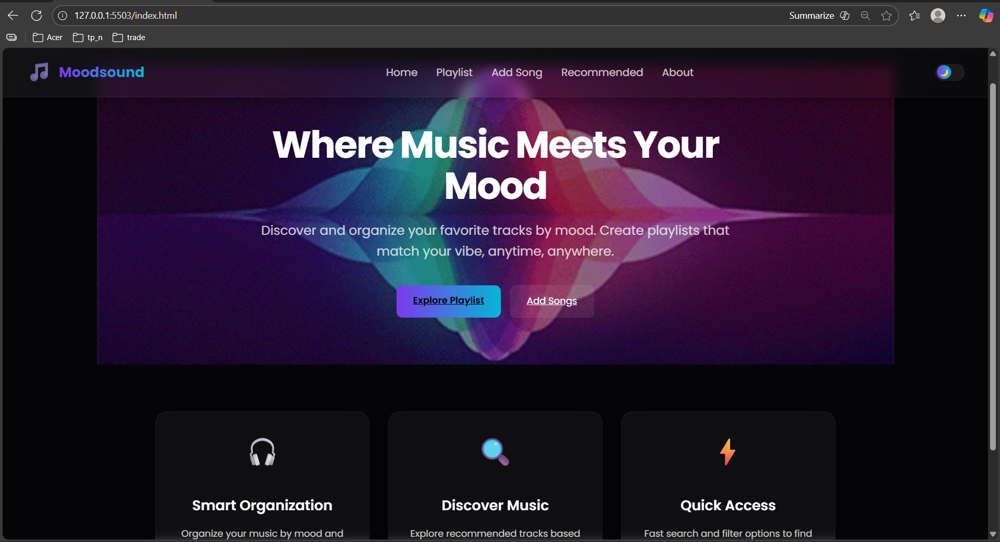
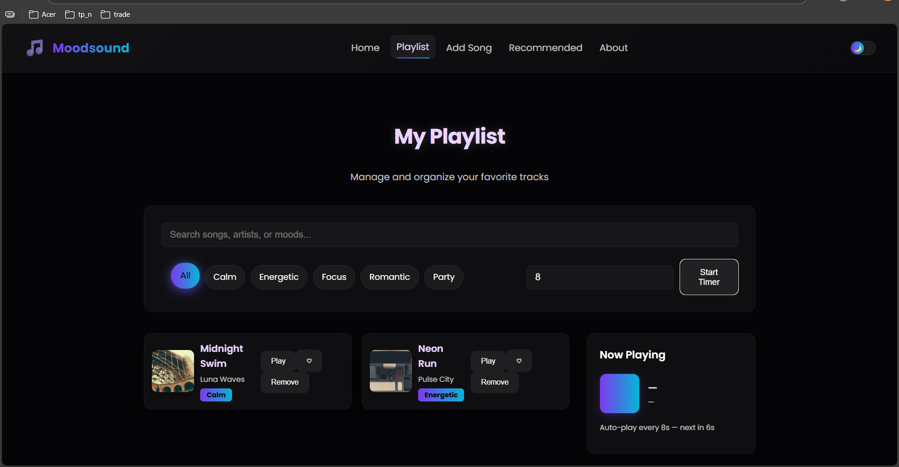
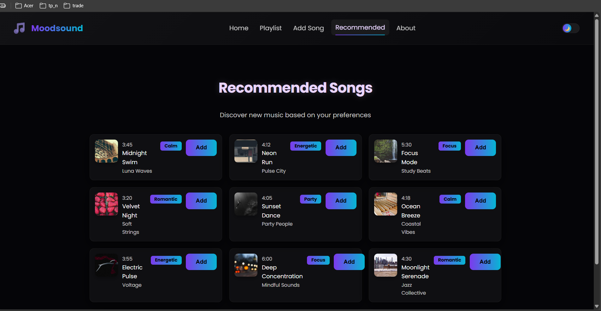
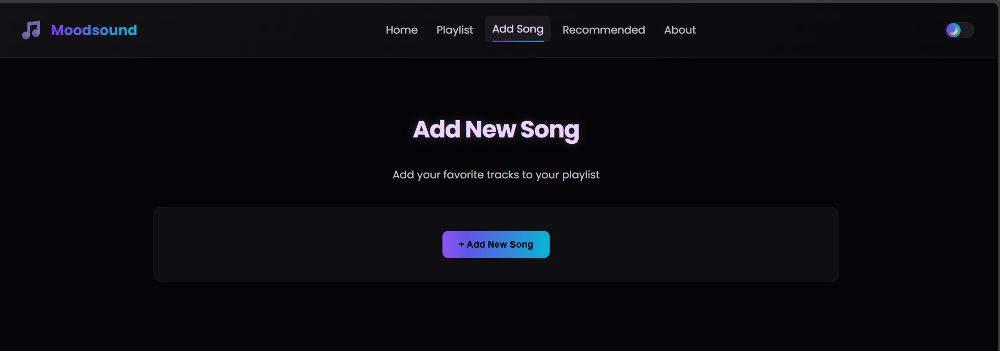

Mini Spotify — local demo
A lightweight demo to explore playlist creation, recommendations, and simple track management using local data. Built as a small front-end project for learning and portfolio use.
What you'll find:
- Playlists & recommendations
- Add/manage songs locally
- Static JSON-backed demo
Key Features
Playlist management
Create, edit and view playlists stored in `data.json`.
Recommendations
Simple curated recommendations page and logic.
Add tracks
Form to add new songs (saved to local JSON during demo).
Responsive UI
Works on desktop and mobile with a lightweight layout.
Technologies
HTML
CSS
JavaScript
Local JSON (`data.json`)
Run locally
Open the demo in your browser or run a tiny static server if you run into file issues:
# Option 1 (quick): double-click `index.html` to open in your browser # Option 2 (recommended): run a static server npx http-server . -p 8080 # or (if Python installed) python -m http.server 8000 # then open: http://localhost:8080/index.html
Screenshots:




Author
Built by ShreyaliDongre.